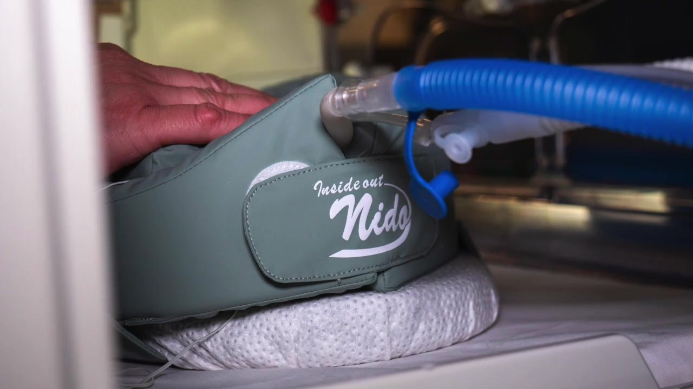

Contención y estimulación sensorial para el recién nacido prematuro
Nido es un sistema patentado para unidades neonatales. Ayuda a posicionar y contener al bebé, mantiene su calor y el olor de sus padres, y reduce el tiempo de preparación de 12 a 3 minutos.

preparación
Con la colaboración de
- Hospital Sant Joan de Déu
- Hospital Clínic de Barcelona
- Hospital Clínic Universitari de València
- Elisava
Cada año nacen miles de bebés antes de tiempo
Los recién nacidos prematuros pasan sus primeras semanas en la UCI neonatal. Necesitan contención, una postura adecuada y estímulos controlados, y sus familias necesitan estar cerca.
Un sistema pensado para el bebé, la familia y el equipo de enfermería
Nido combina diseño ergonómico y estimulación sensorial para cuidar las necesidades físicas y emocionales del prematuro.
Contención y posicionamiento
Recoge al bebé en una postura flexionada y estable, como en el útero.
Estimulación sensorial
Ofrece estímulos suaves y controlados que acompañan su desarrollo.
Calor y vínculo
Mantiene el calor del bebé y el olor de sus padres, y refuerza el vínculo familiar.
Ergonómico y desinfectable
Diseñado para el uso diario en la incubadora y fácil de limpiar entre pacientes.

Menos tiempo de preparación, más tiempo con el paciente
Nido llega listo para usar y simplifica la preparación del nido en la incubadora.
- Preparación del producto más rápida
- Interacción más sencilla con el paciente
- Mejores prácticas asistenciales en la unidad
Nido en la UCI neonatal
Cómo se usa en el Hospital Sant Joan de Déu y cómo nació el proyecto. 1 min 45 s.
Diseñado junto a quienes lo usan
Nido se ha diseñado y probado con profesionales de neonatología, pediatría y enfermería. Así llega al mercado como producto sanitario, con el rigor clínico y el diseño que necesita una unidad neonatal.
- Hospital Sant Joan de DéuBarcelona · desarrollo del producto
- Hospital Clínic de BarcelonaNeonatología
- Hospital Clínic Universitari de ValènciaPediatría
- Universitat de ValènciaFacultat d'Infermeria
- ElisavaEscola Universitària de Disseny i Enginyeria
- i4KIDSPresentado en CosmoCaixa, Barcelona
- Uso
- Unidades de cuidados intensivos neonatales y pediatría
- Paciente
- Recién nacido prematuro y neonato hospitalizado
- Funciones
- Contención, posicionamiento y estimulación sensorial
- Limpieza
- Desinfectable
- Propiedad intelectual
- Sistema patentado
- Regulación
- [Marcado CE y clase de producto sanitario]

Diseño y salud, en el mismo equipo
Somos expertas en desarrollo de producto. Integramos a los profesionales de los hospitales en todo el proceso de diseño para crear soluciones útiles de verdad.
- Eva DíazFundadora
- María José TroyanoAsesora médica
- Paola MecchiaAsesora de producto
¿Quieres probar Nido en tu unidad?
Te enseñamos el sistema en una demostración y te enviamos la ficha técnica completa.